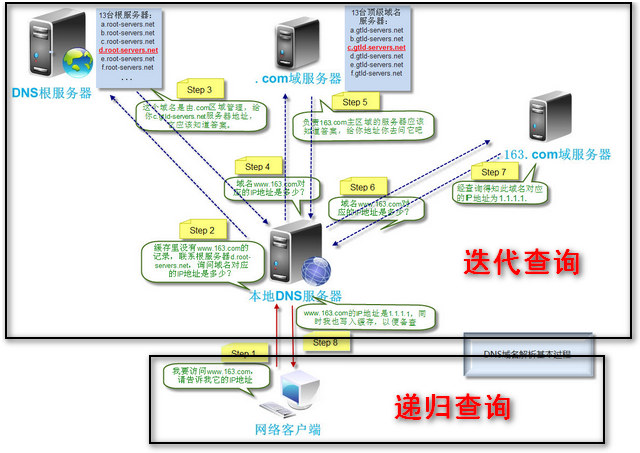

JavaScript篇
null和undifined转换为对象时，会造成类型错误(TypeError)；但是用Object()构造函数转换时会返回一个空对象字面量创建数组时:
中间加逗号会创建undefined元素，而在末尾加逗号不会1234567var array1 = [1,2,3,];console.log(array1.length);//3//结尾处加逗号并不会增加数组长度，不会创建undefined元素var array2 = [1,,3];console.log(array2.length);//3console.log(array2[1]);//undefined//中间加逗号会创建undefined元素对象直接量中属性名称可以是字符串而非标识符(这意味着可以在字符串中使用非法标识符)
运算顺序
1234var a = 1;var b = (a++)+a;console.log(b);//3//a增1的操作是立即执行的，而非表达式完成之后才执行==操作符的类型转换
若一个值为数字，另一个值为字符串，则将字符串转换为数字再比较；
若一个值为true/false，则转换为1/0再比较；+和比较符对比+更偏爱字符串，而比较符更偏爱数字。12"1"+2;//"12""1">2;//false."1"被转换为数字1in运算符12345var data = [7,8,9];"0" in data;//true1 in data;//true3 in data;//false// 在数组中index就是它的属性名，且index是字符串，用数字访问时会转换为字符串=赋值操作符
赋值顺序:从右向左1234567(function(){var i=j=k=1;})();console.log(i);//i is not definedconsole.log(j);//1console.log(k);//1//j,k被定义为了全局变量eval()真的是evil？eval只有一个参数:
若该参数不是字符串，则直接返回该字符串;
若该参数是字符串，则当成JS代码编译:
编译失败，抛出SyntaxError;
编译成功，执行该代码，返回最后一个表达式或语句值，若没有则返回undefined;直接调用
eval()时，它总是在调用它的上下文作用域内执行；
间接调用时，使用全局对象作为上下文作用域，且无法读写，定义局部变量和函数delete运算符
删除对象属性或者数组元素123var array = [1,2,3];delete array[1];console.log(array[1]); //undefined,删除但是仍然占位包装类型
把基本类型值传递给Object构造函数就会创建相应的包装对象实例1234567891011121314var str = new Object('haha');var num = new Object(5);var bol = new Object(true);console.log(str instanceof String); // trueconsole.log(num instanceof Number); // trueconsole.log(bol instanceof Boolean); // true//还应当注意:var val = '25';var num1 = Number(val);console.log(typeof num1);//'number'var obj = new Number(val);console.log(typeof obj); // 'object'==和===
HTML篇
doctype是什么？
首先,<!doctype>不属于HTML标签，它只是用来声明HTML版本，以便浏览器渲染。
其次,<!doctype>必须出现在HTML文档头部，即<html>前面
最后，为何在HTML5之前需要写DTD，而在HTML5里面只需写<!DOCTYPE html>就行？
因为HTML5是不基于SGML(Standard Generallized Markup Language)创建的：
为了描述文档的结构，SGML定义了一个称为“文档类型定义(Document Type Definition，DTD)”的文件，它为组织文档的文档元素(例如章和章标题，节和主题等)提供了一个框架。此外，DTD还为文档元素之间的相互关系制定了规则。例如，“章的标题必须是在章开始之后的第一个文档元素”，“每个列表至少要有两个项目”等。DTD定义的这些规则可以确保文档的一致性。 ————浏览器内核引擎——SGML族语言
HTML全局属性有哪些？
accesskey规定使元素获得焦点的快捷键(Alt+快捷键)
class类名
id 元素id
style 行内样式
data-*自定义属性
draggable设置元素是否可拖拽
dropzone 设置元素拖放类型:copy,move,link
hidden 设置元素不显示
lang 元素内容的语言
spellcheck是否启动拼写和语法检查
tabindex 设置元素通过tab可以导航(即按下Tab时的顺序)
title 设置元素相关信息
translate 元素和子孙节点内容是否需要本地化
contenteditable指定元素内容是否可编辑
contextmenu自定义鼠标右键弹出菜单内容，目前只有火狐支持
dir 设置文本方向
何谓“Web语义化”，有什么好处?
分为HTML标签语义化和CSS命名语义化:
HTML语义化:通过使用包含语义的标签(如<header>,<footer>)恰当地表示文档结构
CSS命名语义化:为HTML标签添加有意义的class，id补充未表达的语义
好处:
1.不需要样式页面也可以呈现清晰的结构
2.无障碍阅读
3.便于搜索引擎理解整个页面，利于收录
4.团队协作更为便利
从浏览器地址栏输入URL到显示页面的步骤(HTTP为例)
- 输入URL
- 浏览器查看缓存:
- 若资源未缓存，发起新请求
- 若资源已缓存，查看是否过期，未过期则直接提供给客户端，否则与服务器验证
- 查看是否过期由两个文件头控制
Expires和Cache-Control- HTTP1.0提供
Expires,值为一个绝对时间表示缓存过期时间 - HTTP1.1增加
Cache-Control:max-age，值为基于请求时间的以秒为单位的相对时间间隔
- HTTP1.0提供
- 查看是否过期由两个文件头控制
- 浏览器解析URL获取协议，主机，端口，path
- 浏览器组装HTTP(GET)请求报文
浏览器获取主机ip地址,过程如下：
- 浏览器缓存
- 本机缓存
- hosts文件
- 路由器缓存
- ISP DNS缓存
- DNS递归查询

打开一个socket与目标IP地址，端口并建立TCP链接，三次握手:
- 客户端发送一个TCP的SYN=1，Seq=X的包到服务器端口
- 服务器发回SYN=1，ACK=X+1，Seq=Y的响应包
- 客户端发送ACK=Y+1，Seq=Z
- TCP链接建立后发送HTTP请求
- 服务器接受请求并解析，将请求转发到服务程序
- 服务器检查HTTP请求头是否包含缓存验证信息，若验证缓存未过期，返回304状态码
- 处理程序读取完整请求并准备HTTP响应，可能需要查询数据库等操作
- 服务器将响应报文通过TCP链接发送回浏览器
- 浏览器接受HTTP响应，然后根据情况选择关闭TCP链接或保留重用，关闭TCP链接的四次握手如下:
- 主动方发送Fin=1，ACK=Z，Seq=X报文
- 被动方发送ACK=X+1，Seq=Z报文
- 被动方发送Fin=1，ACK=X，Seq=Y报文
- 主动方发送ACK=Y，Seq=X报文
- 浏览器检查响应状态码:根据状态码进行处理
- 若资源可缓存，进行缓存
- 对响应进行解码(如gzip压缩)
- 根据资源类型决定如何处理(以下以HTML为例)
- 解析HTML文档，构建DOM树，下载资源，构建CSSOM树，执行JS脚本(不一定是这个顺序)
- 构建DOM树
- Tokenizing:根据HTML规范将字符流解析为标记
- Lexing:词法分析将标记转换为对象并定义属性和规则
- DOM construction:根据HTML标记关系将对象组成DOM树
- 构建CSSOM树
- Tokenizing:字符流转换为标记流
- Lexing:根据标记创建节点
- CSSOM:节点创建CSSOM树
- 解析过程中遇到图片，样式表，js文件，启动下载
- 根据DOM树和CSSOM树构建渲染树
- 从DOM树的根节点遍历所有可见节点(不可见节点包括
<script>,<meta>等以及被css隐藏的节点，如display:none) - 对每一个可见节点找到恰当的CSSOM规则并应用
- 发布可视节点的内容和计算样式
- 从DOM树的根节点遍历所有可见节点(不可见节点包括
- js解析如下:
- 浏览器创建Document对象并解析HTML，将解析到的元素和文本节点添加到文档中，此时
document.readyState为loading - HTML解析器遇到没有
async和defer属性的<script>时，将它们添加到文档中，然后执行脚本。这些脚本会同步执行，且在脚本下载和执行时解析器会暂停，这样就可以用document.write()把文本插入到输入流中。同步脚本经常简单定义函数和注册事件处理程序，它们可以遍历和操作<SCRIPT>和其之前的文档内容 - HTML解析器遇到设置了
async属性的<script>时，开始下载脚本并继续解析文档。脚本会在它下载完成后执行，但是解析器不会停下来等它下载。异步脚本禁止使用document.write()，它们可以访问自己和之前的文档元素 - HTML解析器遇到设置了
async属性的<script>时，会立即下载脚本但延迟执行。延迟脚本禁止使用document.write(),可以访问完整文档树 - 当文档解析完毕，
document.readyState为interactive - 浏览器在Document对象上触发DOMContentLoaded事件
- 此时文档全部解析完成，待诸如图片等内容完全载入且所有异步脚本完成执行,
document.readyState会变成complete,window触发load事件
- 浏览器创建Document对象并解析HTML，将解析到的元素和文本节点添加到文档中，此时
- 构建DOM树
- 显示页面(在解析过程中会逐步显示)